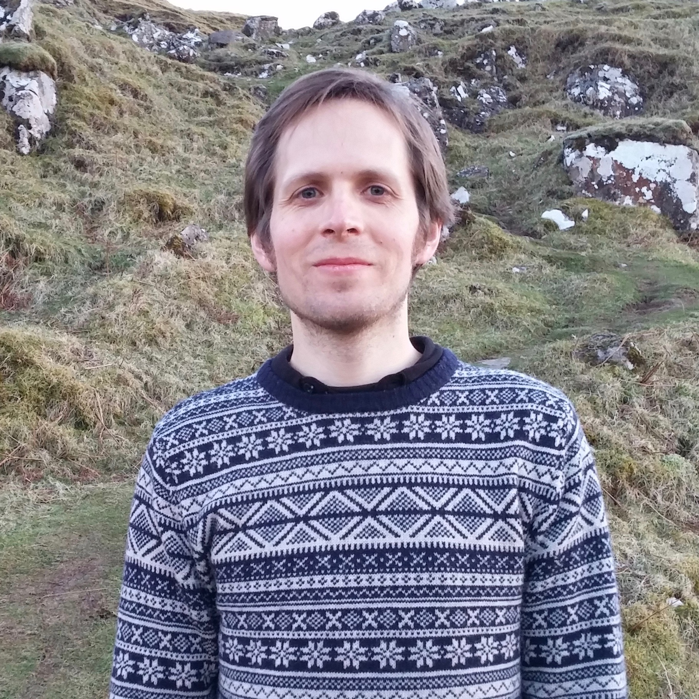

About
I am a Ph.D. candidate at the
University of California San Diego based in the
Center for Visual Computing and the
Department of Music. I do research
in computational acoustics, and I teach courses in computer science and music. My Ph.D. is co-advised by
Albert Chern in Computer Science and
Miller Puckette in Music.
In addition to my academic experience, I have worked for
Reality Labs Research at Meta,
Moog Music,
Applied Research in Acoustics, and Lofelt.
In these roles, I completed research and software development for spatial audio devices, sound synthesizers, sonar systems, and gaming headphones. Prior to my Ph.D., I studied physics at Edinburgh,
Wake Forest, and BYU,
with concentrations in acoustics, optics, and biophysics, respectively. Additionally, I tutored college and high school students in math and physics. Originally from Los Angeles,
I now live in San Diego with my wife and three daughters.
CV
LinkedIn
Google Scholar
ResearchGate
ORCID
Coursework
